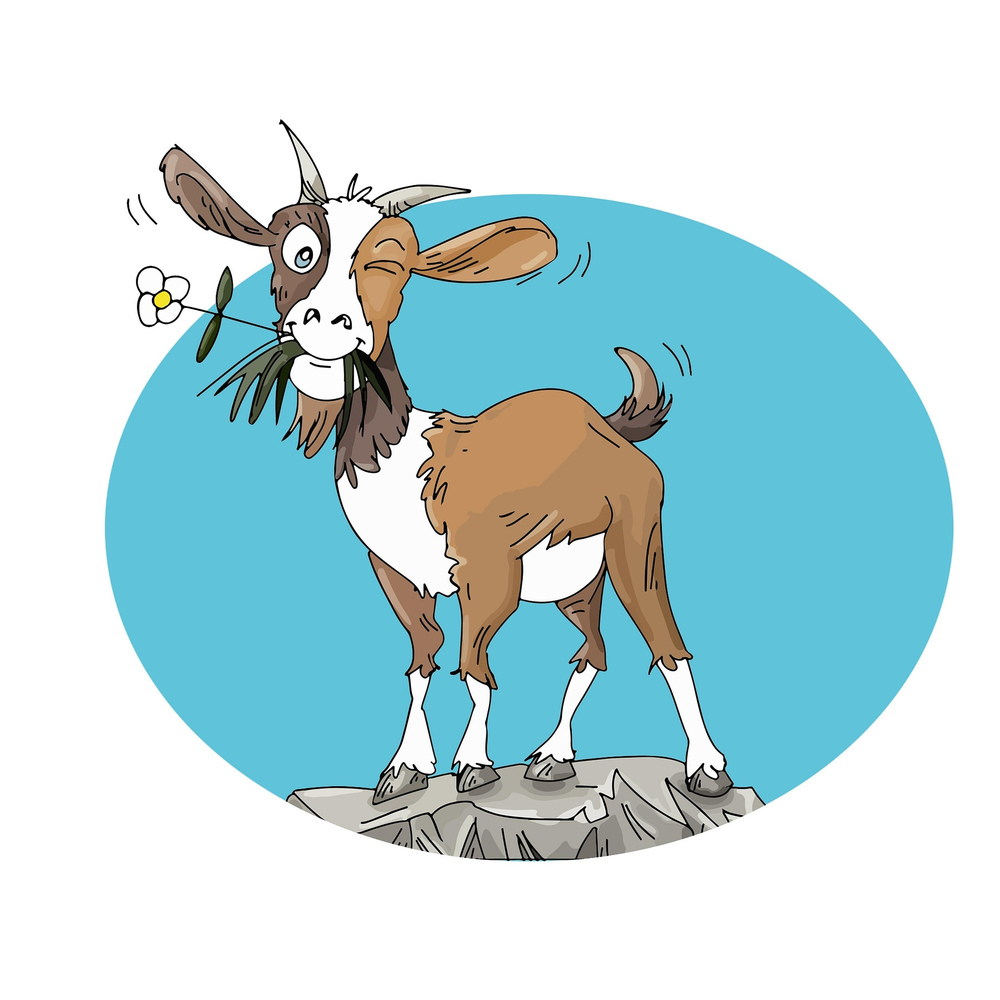

Über mich
Willkommen auf meiner persönlichen Seite. Ich beschäftige mich mit Geoinformatik – mit Karten, räumlichen Daten und der Frage, wie sich Orte und Prozesse verständlich darstellen lassen.
Hier finden Sie einige Stationen meines Werdegangs, aktuelle Neuigkeiten und eine Auswahl eigener Projekte.

| Jahr | Station | Ort | Stichwort |
|---|---|---|---|
| 2014 | Abitur | Musterstadt | Erdkunde-LK |
| 2016 | Studium Geographie (B.Sc.) | Münster | Grundlagen |
| 2019 | Praktikum Vermessungsamt | Köln | Kataster |
| 2020 | Studium Geoinformatik (M.Sc.) | Münster | Fernerkundung |
| 2022 | Werkstudent GIS | Düsseldorf | Webkarten |
| 2024 | GIS-Analyst | Berlin | Open Data |
News
- News werden geladen …